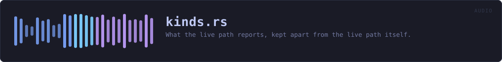

crates/veilvoice-audio/src/kinds.rs
veilvoice-audio · 182 lines · read the source here · or on GitHub
What the live path reports, kept apart from the live path itself.
Roadmap item 162. These are plain data: which side something happened on, what the meters read, what a session was asked to keep, what a device is called. None of them touches cpal, so they are compiled whether or not the live feature is on. The modules that do the capturing re-export them, so veilvoice_audio::live::LiveStats is the same type in both builds, and a front end built without live capture (the window on the BSDs) still has the words to describe a session it cannot start.
In plain words
The numbers and names the live microphone path reports, in a file of their own so that a build with no microphone support still knows what they are.
WHAT THIS FILE CONTAINS
182 lines defining 2 functions (2 public), 8 types and 1 constant. Everything below is read out of the source, so it cannot disagree with the code.
The types it owns.
enum Sideline 21 · Which side of the engine something happened to.struct Interferenceline 51 · Something that happened to the audio path while it was running.struct LiveStatsline 69 · A snapshot of what the live path is doing, safe to read from the UI.struct Keepingline 98 · Which sides of the engine a session keeps.struct GuestStatsline 124 · What one guest's half of a running room is doing.struct RoomStatsline 139 · What a running room is doing, safe to read from the interface.enum Directionline 166 · Which direction a device carries audio.struct DeviceInfoline 175 · A device the user can choose.
What happens when it runs. These are the ways in: public, and nothing else in this file calls them, so they are what an outside caller reaches first.
Side::wordline 30 · The word for this side, as a person reading a warning would meet it.Keeping::is_anythingline 109 · Whether anything at all is being kept.
WHAT CALLS WHAT
The functions this file defines, and the calls between them. An edge means the callee's name appears, called, inside the caller's body. This is a syntactic reading, not a type-resolved one.
The same graph as Mermaid source
%%{init: {"theme":"base","themeVariables":{"background":"#1a1b26","primaryColor":"#1f2335","primaryTextColor":"#c0caf5","primaryBorderColor":"#7aa2f7","secondaryColor":"#16161e","tertiaryColor":"#16161e","lineColor":"#737aa2","textColor":"#c0caf5","mainBkg":"#1f2335","nodeBorder":"#7aa2f7","clusterBkg":"#16161e","clusterBorder":"#2f3549","fontFamily":"ui-monospace, SFMono-Regular, Consolas, monospace","fontSize":"14px"}}}%%
flowchart TD
n_word(["Side::word<br/>line 30"])
n_is_anything(["Keeping::is_anything<br/>line 109"])
click n_word href "https://github.com/tilas01/veilvoice/blob/main/crates/veilvoice-audio/src/kinds.rs#L30" "open the source"
click n_is_anything href "https://github.com/tilas01/veilvoice/blob/main/crates/veilvoice-audio/src/kinds.rs#L109" "open the source"
classDef entry fill:#1f2335,stroke:#7aa2f7,color:#c0caf5
class n_word,n_is_anything entryThis site loads no third-party script, so it cannot run Mermaid; the diagram above is the same nodes and edges drawn by the generator instead. GitHub renders the source below directly.
ITEMS
| Item | Line | Documentation |
|---|---|---|
Side pub enum | 21 | Which side of the engine something happened to. |
Side::word pub fn | 30 | The word for this side, as a person reading a warning would meet it. |
Interference pub struct | 51 | Something that happened to the audio path while it was running. |
LiveStats pub struct | 69 | A snapshot of what the live path is doing, safe to read from the UI. |
Keeping pub struct | 98 | Which sides of the engine a session keeps. |
Keeping::is_anything pub fn | 109 | Whether anything at all is being kept. |
MAX_GUESTS pub const | 120 | The most microphones one room will open at once. |
GuestStats pub struct | 124 | What one guest's half of a running room is doing. |
RoomStats pub struct | 139 | What a running room is doing, safe to read from the interface. |
Direction pub enum | 166 | Which direction a device carries audio. |
DeviceInfo pub struct | 175 | A device the user can choose. |